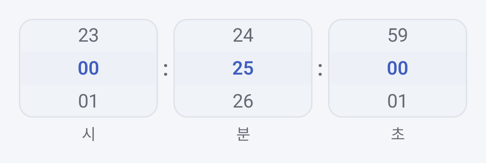
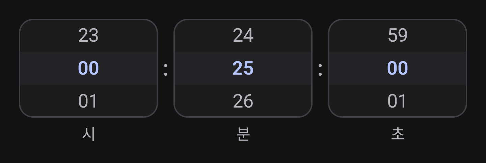

StudioWheelPicker
2열 시각 범위 또는 3열 타이머 입력을 구성합니다.
- 컴포넌트 ID
studio-wheel-picker- 분류
- 입력
- 구현
StudioWheelPicker·MyWidget/app/src/main/java/com/mywidget/editor/core/designsystem/component/StudioWheelPicker.kt:70- 주요 API
- columns: List<StudioWheelColumn>, separator, showColumnLabels, modifier
- 지원 상태
- 선택
- 스크롤
- 비활성
- 변형
- 시각 범위
- 시·분·초
- 하단 컬럼 레이블
- 크기
- 컬럼 높이와 항목 수는 실제 휠 규격을 사용
- 테마·토큰
- surfaceVariant
- onSurface
- onSurfaceVariant
- MaterialTheme.typography
- 접근성·사용 규칙
- 컬럼의 접근성 이름, 현재 값, 이동 동작을 제공하고 보이는 하단 레이블은 중복 읽지 않습니다.
- 공통 사용 여부
- 오늘의 진행률과 스톱워치의 시간 입력에서 사용
- 설계 품질
- 휠은 값을 표현하고 시간 규칙은 호출부에 남음
- 판단
- 유지
- 판단 근거
- 두 편집 화면이 같은 스크롤 선택 계약을 사용합니다.
- 구현·문서
- 현재 소스 위치와 심볼 확인
- 렌더링
- 네이티브 캡처 있음
코드 예시
StudioWheelPicker(
columns = listOf(
StudioWheelColumn("hours", "시", 0..23, 0, {}),
StudioWheelColumn("minutes", "분", 0..59, 25, {}),
StudioWheelColumn("seconds", "초", 0..59, 0, {}),
),
separator = ":", showColumnLabels = true,
)Android 네이티브 예시
아래 캡처에 표시된 상태와 기기 조건을 확인했습니다.

411 × 891 dp · 560 dpi · 글꼴 1배 · API 35 · ko-KR
캡처 기준 HEAD
ff118cc8d · 소스 지문 73da2a0be891 · 2026-11-13T10:23:11.274577Z
411 × 891 dp · 560 dpi · 글꼴 1배 · API 35 · ko-KR
캡처 기준 HEAD
ff118cc8d · 소스 지문 73da2a0be891 · 2026-11-13T10:23:11.274577Z